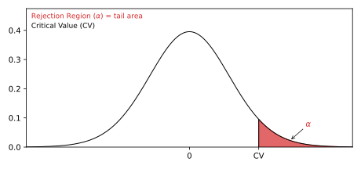
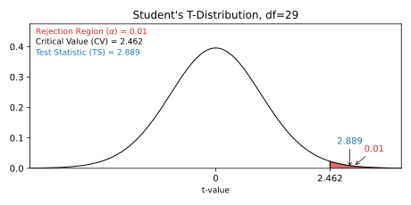
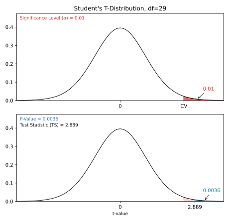

Статистика - Гипотеза, проверяющая среднее
Среднее генеральной совокупности - это среднее значение генеральной совокупности.
Тесты гипотез используются для проверки утверждения о размере этого среднего совокупности.
Гипотеза, проверяющая среднее
Для проверки гипотез используются следующие шаги:
- Проверить условия
- Определить претензии
- Определить уровень значимости
- Рассчитать статистику теста
- Заключение
Например:
- Совокупность: Лауреаты Нобелевской премии
- Категория: Возраст, когда они получили премию
И мы хотим проверить претензию:
"Средний возраст лауреатов Нобелевской премии, когда они получили премию, более чем 55 лет."
Взяв выборку из 30 случайно выбранных лауреатов Нобелевской премии, мы смогли обнаружить, что:
Средний возраст в выборке (\(\bar{x}\)) равен 62.1
Стандартное отклонение возраста в выборке (\(s\)) равно 13.46
По этим выборкам данных мы проверяем претензию, выполнив следующие действия.
1. Проверка условий
Условия для расчета доверительного интервала для доли:
- Выборка произведена случайным образом
- А также:
- Данные о совокупности распределены нормально
- Размер выборки достаточно велик
Обычно достаточно большого размера выборки, например 30.
В этом примере размер выборки был 30, и она была выбрана случайным образом, поэтому условия выполняются.
Примечание: Проверить, нормально ли распределяются данные, можно с помощью специализированных статистических тестов.
2. Определение претензий
Нам нужно определить нулевую гипотезу (\(H_{0}\)) и альтернативную гипотезу (\(H_{1}\)) на основе утверждения, которое мы проверяем.
Претензия была:
"Средний возраст лауреатов Нобелевской премии, когда они получили премию, более чем 55 лет".
В этом случае параметр - это средний возраст лауреатов Нобелевской премии, когда они получили премию (\(\mu\)).
Тогда нулевая и альтернативная гипотезы:
Нулевая гипотеза: средний возраст - 55 лет.
Альтернативная гипотеза: средний возраст был больше чем 55 лет.
Что можно выразить символами как:
\(H_{0}\): \(\mu = 55 \)
\(H_{1}\): \(\mu > 55 \)
Это 'правый хвост' теста, поскольку альтернативная гипотеза утверждает, что пропорция больше, чем в нулевой гипотезе.
Если данные подтверждают альтернативную гипотезу, мы отклоняем нулевую гипотезу и принимаем альтернативную гипотезу.
3. Определение уровня значимости
Уровень значимости (\(\alpha\)) - это неопределённость, которую мы принимаем при отклонении нулевой гипотезы в проверке гипотез.
Уровень значимости - это процентная вероятность случайного ошибочного вывода.
Типичные уровни значимости:
- \(\alpha = 0.1\) (10%)
- \(\alpha = 0.05\) (5%)
- \(\alpha = 0.01\) (1%)
Более низкий уровень значимости означает, что доказательства в данных должны быть более убедительными, чтобы отвергнуть нулевую гипотезу.
Не существует "правильного" уровня значимости - он лишь констатирует неопределенность вывода.
Примечание: 5% уровень значимости означает, что когда мы отвергаем нулевую гипотезу:
Мы ожидаем отклонить истинную нулевую гипотезу в 5 случаях из 100.
4. Расчет статистики теста
Статистика теста используется для определения результата проверки гипотезы.
Статистика теста - это стандартизованное значение, рассчитанное на основе выборки.
Формула для тестовой статистики (TS) среднего значения генеральной совокупности:
\(\displaystyle \frac{\bar{x} - \mu}{s} \cdot \sqrt{n} \)
\(\bar{x}-\mu\) - это разница между выборкой среднего (\(\bar{x}\)) и заявленным средним совокупности (\(\mu\)).
\(s\) - это стандартное отклонение выборки.
\(n\) - это размер выборки.
В нашем примере:
Заявленное (\(H_{0}\)) среднее совокупности (\(\mu\)) было \( 55 \)
Среднее выборки (\(\bar{x}\)) было \(62.1\)
Стандартное отклонение выборки (\(s\)) было \(13.46\)
Размер выборки (\(n\)) был \(30\)
Таким образом, тестовая статистика (TS) тогда:
\(\displaystyle \frac{62.1-55}{13.46} \cdot \sqrt{30} = \frac{7.1}{13.46} \cdot \sqrt{30} \approx 0.528 \cdot 5.477 = \underline{2.889}\)
Вы также можете рассчитать статистику теста, используя функции языка программирования:
Пример
В Python используйте библиотеки scipy и math для вычисления статистики теста.
import scipy.stats as stats
import math
# Укажите среднее значение выборки (x_bar), стандартное отклонение выборки, среднее значение, заявленное в нулевой гипотезе (mu_null), и размер выборки (n)
x_bar = 62.1
s = 13.46
mu_null = 55
n = 30
# Рассчитайте и распечатайте тестовую статистику
print((x_bar - mu_null)/(s/math.sqrt(n)))
Попробуйте сами »
Пример
С помощью R используйте встроенные математические и статистические функции для расчета тестовой статистики.
# Укажите среднее значение выборки (x_bar), стандартное отклонение выборки, среднее значение, заявленное в нулевой гипотезе (mu_null), и размер выборки (n)
x_bar <- 62.1
s <- 13.46
mu_null <- 55
n <- 30
# Вывести статистику теста
(x_bar - mu_null)/(s/sqrt(n))
Попробуйте сами »
5. Заключение
Существует два основных подхода к заключению проверки гипотезы:
- Подход критического значения сравнивает статистику теста с критическим значением уровня значимости
- Подход P-значения сравнивает P-значение тестовой статистики и уровень значимости
Примечание. Эти два подхода различаются только тем, как они представляют заключение.
Подход критических значений
Для подхода критического значения нам нужно найти критическое значение (CV) уровня значимости (\(\alpha\)).
Для теста на среднее значение для генеральной совокупности критическое значение (CV) - это T-значение из стьюдент t-распределения.
Это критическое T-значение (CV) определяет область отклонения для теста.
Область отклонения - это область вероятности в хвостах стандартного нормального распределения.
Поскольку утверждается, что среднее значение генеральной совокупности больше чем 55, область отклонения находится в правом хвосте:

Размер области отклонения определяется уровнем значимости (\(\alpha\)).
Стьюдент t-распределение скорректировано с учетом неопределенности по меньшим выборкам.
Эта корректировка называется степенями свободы (df), то есть размером выборки \((n) - 1\)
В этом случае степени свободы (df) равны: \(30 - 1 = \underline{29} \)
Выбрав уровень значимости (\(\alpha\)) 0,01 или 1%, мы можем найти критическое T-значение из T-таблицы, или с помощью функции языка программирования:
Пример
В Python используйте функцию библиотеки Scipy Stats t.ppf() найдите T-значение для \(\alpha\) = 0,01 при 29 степенях свободы (df).
import scipy.stats as stats
print(stats.t.ppf(1-0.01, 29))
Попробуйте сами »
Пример
В R используйте встроенную функцию qt() чтобы найти t-значение для \(\alpha\) = 0,01 при 29 степенях свободы (df).
qt(1-0.01, 29)
Попробуйте сами »
Используя любой метод, мы можем найти, что критическое T-значение равно \(\approx \underline{2.462}\)
Для правостороннего теста необходимо проверить, не превышает ли тестовая статистика (TS) критическое значение (CV).
Если тестовая статистика больше критического значения, то тестовая статистика находится в области отклонения.
Когда статистика теста находится в области отклонения, мы отклоняем нулевую гипотезу (\(H_{0}\)).
Здесь тестовая статистика (TS) была \(\approx \underline{2.889}\), а критическое значение было \(\approx \underline{2.462}\)
Вот иллюстрация этого теста в виде графика:

Поскольку статистика теста была больше критического значения, мы отклоняем нулевую гипотезу.
Это означает, что выборки данных подтверждают альтернативную гипотезу.
И мы можем резюмировать вывод о том, что:
Выборки данных подтверждают утверждение о том, что "средний возраст лауреатов Нобелевской премии на момент получения премии превышает 55 лет" при 1% уровне значимости.
Подход P-значения
Для подхода P-значения нам нужно найти P-значение тестовой статистики (TS).
Если P-значение меньше уровня значимости (\(\alpha\)), мы отклоняем нулевую гипотезу (\(H_{0}\)).
Статистика теста оказалась \( \approx \underline{2.889} \)
Для теста доли населения статистика теста представляет собой T-значение из стьюдент t-распределения.
Поскольку это правосторонний тест, нам нужно найти P-значение для T-значения больше чем 2,889.
Стьюдент T-распределение корректируется в соответствии со степенями свободы (df), которые являются размером выборки \((30) - 1 = \underline{29}\)
Мы можем найти P-значение с помощью T-таблицы или с помощью функции языка программирования:
Пример
Используя Python, используйте функцию библиотеки Scipy Stats t.cdf() чтобы найти P-значение для T-значения больше 2,889 при 29 степенях свободы (df):
import scipy.stats as stats
print(1-stats.t.cdf(2.889, 29))
Попробуйте сами »
Пример
С помощью R используйте встроенную функцию pt(), чтобы найти P-значение для T-значения больше 2,889 при 29 степенях свободы (df):
1-pt(2.889, 29)
Попробуйте сами »
Используя любой метод, мы можем найти, что p-значение равно \(\approx \underline{0.0036}\)
Это говорит нам о том, что уровень значимости (\(\alpha\)) должен быть больше 0.0036, или 0.36%, чтобы отклонить нулевую гипотезу.
Вот иллюстрация этого теста в виде графика:

Это P-значение меньше, чем любой из распространенных уровней значимости (10%, 5%, 1%).
Таким образом, нулевая гипотеза отклоняется на всех этих уровнях значимости.
И мы можем резюмировать вывод, констатируя:
Выборки данных подтверждают утверждение о том, что "Средний возраст лауреатов Нобелевской премии, когда они получили премию, превышает 55 лет" при 10%, 5%, или 1% уровне значимости.
Примечание: Результат проверки гипотезы, который отклоняет нулевую гипотезу с p-значением 0.36% означает:
Для этого p-значения мы ожидаем отклонить истинную нулевую гипотезу только 36 раз из 10000.
Расчет P-значения для проверки гипотез с помощью программирования
Многие языки программирования могут вычислять P-значение для определения результата проверки гипотез.
Использование программного обеспечения и программирования для расчета статистики более распространено для больших наборов данных, поскольку вычисление вручную становится затруднительным.
Рассчитанное здесь P-значение покажет нам самый низкий возможный уровень значимости, при котором нулевая гипотеза может быть отклонена.
Пример
В Python используйте библиотеки scipy и math для вычисления P-значения для проверки гипотезы с правым хвостом для среднего.
Здесь размер выборки - 30, выборочное среднее - 62,1, стандартное отклонение выборки - 13,46, а тест - для среднего значения больше 55.
import scipy.stats as stats
import math
# Укажите среднее значение выборки (x_bar), стандартное отклонение выборки, среднее значение, заявленное в нулевой гипотезе (mu_null), и размер выборки (n)
x_bar = 62.1
s = 13.46
mu_null = 55
n = 30
# Рассчитайте тестовую статистику
test_stat = (x_bar - mu_null)/(s/math.sqrt(n))
# Выведите p-значение тестовой статистики (правосторонний тест)
print(1-stats.t.cdf(test_stat, n-1))
Попробуйте сами »
Пример
С помощью R используйте встроенные математические и статистические функции, чтобы найти P-значение для проверки гипотезы с правым хвостом для среднего.
Здесь размер выборки составляет 30, среднее значение выборки - 62,1, стандартное отклонение выборки - 13,46, а тест предназначен для среднего значения, превышающего 55.
# Укажите среднее значение выборки (x_bar), стандартное отклонение выборки, среднее значение, заявленное в нулевой гипотезе (mu_null), и размер выборки (n)
x_bar <- 62.1
s <- 13.46
mu_null <- 55
n <- 30
# Рассчитайте тестовую статистику
test_stat = (x_bar - mu_null)/(s/sqrt(n))
# P-значение тестовой статистики (правосторонний тест)
1-pt(test_stat, n-1)
Попробуйте сами »
Левосторонние и двусторонние тесты
Это был пример правостороннего теста, в котором альтернативная гипотеза утверждала, что параметр больше, чем утверждение нулевой гипотезы.
Вы можете ознакомиться с аналогичным пошаговым руководством для других типов здесь: